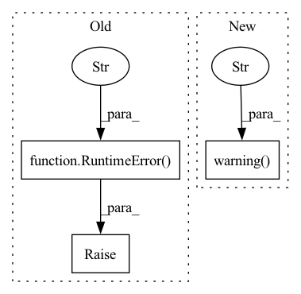

Pattern ID :29452
Before Change
if not secret_manager or not isinstance(
secret_manager, BaseSecretsManager
):
raise RuntimeError(
f"The active stack doesn"t have a secret manager component. "
f"The ZenML secret specified in the Seldon Core Model "
f"Deployer configuration cannot be fetched: {self.config.secret}."
)
try:
zenml_secret = secret_manager.get_secret(self.config.secret)
except KeyError:After Change
// create a Kubernetes secret from that
if self.config.secret:
logger.warning(
"Your Seldon Core model deployer is configured to use a "
"ZenML secret that holds credentials needed to access the "
"artifact store. The recommended authentication method is to "
"configure credentials for the artifact store stack component "
"instead. The Seldon Core model deployer will use those "
"credentials to authenticate to the artifact store "
"automatically."
)
try:
zenml_secret = Client().get_secret_by_name_and_scope(
name=self.config.secret,In pattern: SUPERPATTERN
Frequency: 6
Non-data size: 3
Instances Fragment ID: 87394493
Project Name: maiot-io/zenml
Commit Name: f55a72942a5ca6009c26bdd6dd6dd13efa70e626
Time: 2023-03-16
Author: stefan@zenml.io
File Name: src/zenml/integrations/seldon/model_deployers/seldon_model_deployer.py
M Class Name: SeldonModelDeployer
N Class Name: SeldonModelDeployer
M Method Name: _create_or_update_kubernetes_secret(1)
N Method Name: _create_or_update_kubernetes_secret(1)
M Parent Class: BaseModelDeployer
N Parent Class: BaseModelDeployer
M File Name: src/zenml/integrations/seldon/model_deployers/seldon_model_deployer.py
N File Name: src/zenml/integrations/seldon/model_deployers/seldon_model_deployer.py
M Start Line: 183
M End Line: 210
N Start Line: 193
N End Line: 250
Before Change
// an MLflow model was not found in the current run, so we simply reuse
// the service created during the previous step run
if not existing_services:
raise RuntimeError(
f"An MLflow model with name `{config.model_name}` was not "
f"trained in the current pipeline run and no previous "
f"service was found."
)
return service
if not deploy_decision:
logger.info(After Change
// an MLflow model was not trained in the current run, so we simply reuse
// the currently running service created for the same model, if any
if not existing_services:
logger.warning(
f"An MLflow model with name `{config.model_name}` was not "
f"logged in the current pipeline run and no running MLflow "
f"model server was found. Please ensure that your pipeline "
f"includes an `mlflow_enable` decorated step that trains a "
f"model and logs it to MLflow. This could also happen if "
f"re-training a model in the current pipeline run was skipped "
f"due to caching."
)
// return an inactive service just because we have to return
// something
return service
logger.info( Fragment ID: 87394494
Project Name: maiot-io/zenml
Commit Name: 2bbc792044e1d159c5353e442759377f7dd64b08
Time: 2022-05-05
Author: stefan@zenml.io
File Name: src/zenml/integrations/mlflow/steps/mlflow_deployer.py
M Class Name: AnonimousClass
N Class Name: AnonimousClass
M Method Name: mlflow_model_deployer_step(3)
N Method Name: mlflow_model_deployer_step(3)
M Parent Class:
N Parent Class:
M File Name: src/zenml/integrations/mlflow/steps/mlflow_deployer.py
N File Name: src/zenml/integrations/mlflow/steps/mlflow_deployer.py
M Start Line: 89
M End Line: 156
N Start Line: 90
N End Line: 177
Before Change
continuations = [sort_menu[self.sort_by]["serviceEndpoint"]]
needs_sorting = False
continue
raise RuntimeError("Failed to set sorting" )
actions = list(self._search_dict(response, "reloadContinuationItemsCommand")) + \
list(self._search_dict(response, "appendContinuationItemsAction"))
After Change
needs_sorting = False
continue
// TODO: Fix it. Causing observer to fail silently\
logger.warning("Unable to set sorting" )
// raise RuntimeError("Failed to set sorting")
actions = list(self._search_dict(response, "reloadContinuationItemsCommand")) + \
list(self._search_dict(response, "appendContinuationItemsAction")) Fragment ID: 87394489
Project Name: lalitpagaria/obsei
Commit Name: 982ea9a8067ea9cb26f7d71a36379af1e3f34dee
Time: 2022-07-18
Author: pagaria.lalit@gmail.com
File Name: obsei/misc/youtube_reviews_scrapper.py
M Class Name: YouTubeCommentExtractor
N Class Name: YouTubeCommentExtractor
M Method Name: _fetch_comments(2)
N Method Name: _fetch_comments(2)
M Parent Class: BaseModel
N Parent Class: BaseModel
M File Name: obsei/misc/youtube_reviews_scrapper.py
N File Name: obsei/misc/youtube_reviews_scrapper.py
M Start Line: 117
M End Line: 117
N Start Line: 118
N End Line: 118
Before Change
parsed_page = BeautifulSoup(character_page.text, "html.parser")
last_string = parsed_page.body.find("a", string=re.compile("Last ».*"))
if not last_string:
raise RuntimeError(f"Unable to resolve location of last page" )
pages_match = re.search("page=(\d+)", last_string["href"])
if not pages_match:
After Change
parsed_page = BeautifulSoup(character_page.text, "html.parser")
last_string = parsed_page.body.find("a", string=re.compile("Last ».*"))
if not last_string:
logger.warning(f"Unable to resolve location of last page in {url}" )
num_pages = None
else:
pages_match = re.search("page=(\d+)", last_string["href"])
if not pages_match: Fragment ID: 87394491
Project Name: turtlesoupy/this-word-does-not-exist
Commit Name: b3327c0d81c7a908bfee86193a1d7227db1d97f4
Time: 2020-03-15
Author: tdimson@gmail.com
File Name: urban_dictionary_scraper.py
M Class Name: AnonimousClass
N Class Name: AnonimousClass
M Method Name: fetch_letter_page(3)
N Method Name: fetch_letter_page(3)
M Parent Class:
N Parent Class:
M File Name: urban_dictionary_scraper.py
N File Name: urban_dictionary_scraper.py
M Start Line: 101
M End Line: 107
N Start Line: 101
N End Line: 107
Before Change
"No available cuda driver has been found."
)
elif not check_module_version(torch, min_version="1.12.0"):
raise RuntimeError(
"Torch-TensorRT can be installed only from Pytorch 1.12. "
"Please update your Pytorch version."
)
// Verify that TensorRT is installed, otherwise install it
try:
import tensorrt // noqa F401After Change
elif not check_module_version(
torch, min_version="1.12.0", max_version="1.13.1"
):
logger.warning(
"Torch-TensorRT can be installed only for "
""PyTorch>=1.12, <=1.13.1". Please update your Pytorch "
"version accordingly if you want to use Torch-TensorRT."
)
return False
// Verify that TensorRT is installed, otherwise install it
try: Fragment ID: 87394490
Project Name: nebuly-ai/nebullvm
Commit Name: 065e81dcffe44fe29f2d80c5a1416a21b9c8dbef
Time: 2023-04-03
Author: v.sofi@nebuly.ai
File Name: nebullvm/installers/installers.py
M Class Name: AnonimousClass
N Class Name: AnonimousClass
M Method Name: install_torch_tensor_rt(0)
N Method Name: install_torch_tensor_rt(0)
M Parent Class:
N Parent Class:
M File Name: nebullvm/installers/installers.py
N File Name: nebullvm/installers/installers.py
M Start Line: 115
M End Line: 118
N Start Line: 117
N End Line: 122